queenstown-exterior-batch-04
Authorized reference screenshots. Attribution retained. Open full-size images to review clarity; capture success alone is not visual acceptance.
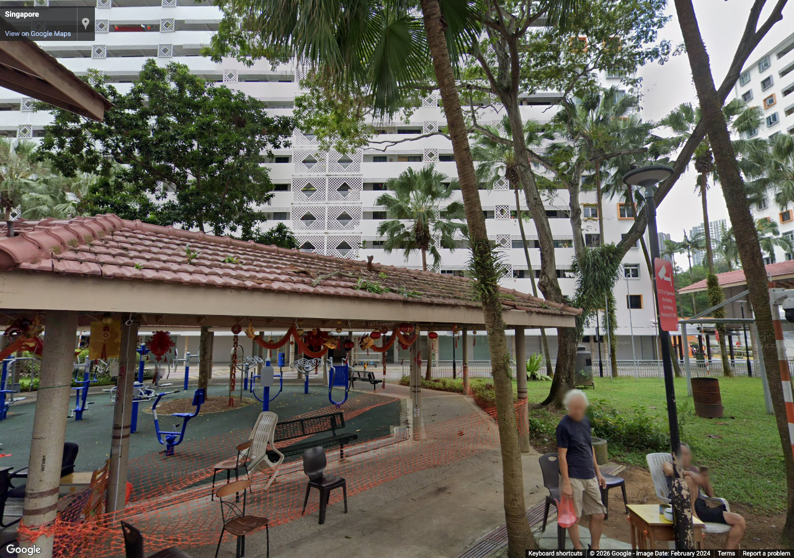
mei-ling-road-0 — Additional street exterior references for estate facades, public realm, planting and sheltered links
Source 2024-02, heading 0°, pitch 8°, zoom 1. Metadata / review
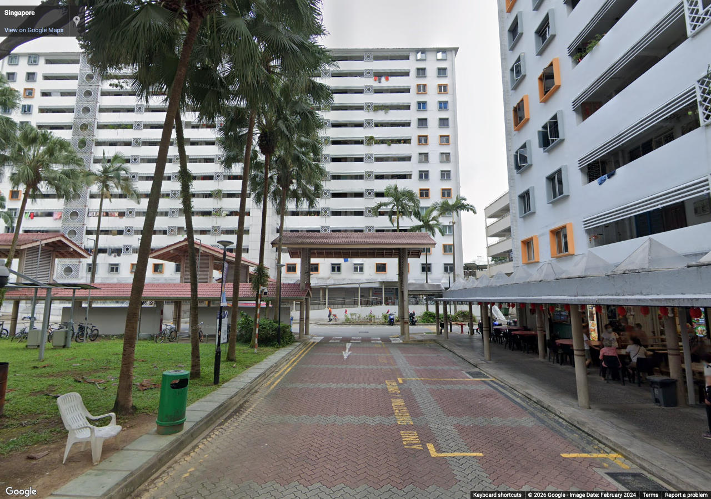
mei-ling-road-90 — Additional street exterior references for estate facades, public realm, planting and sheltered links
Source 2024-02, heading 90°, pitch 8°, zoom 1. Metadata / review
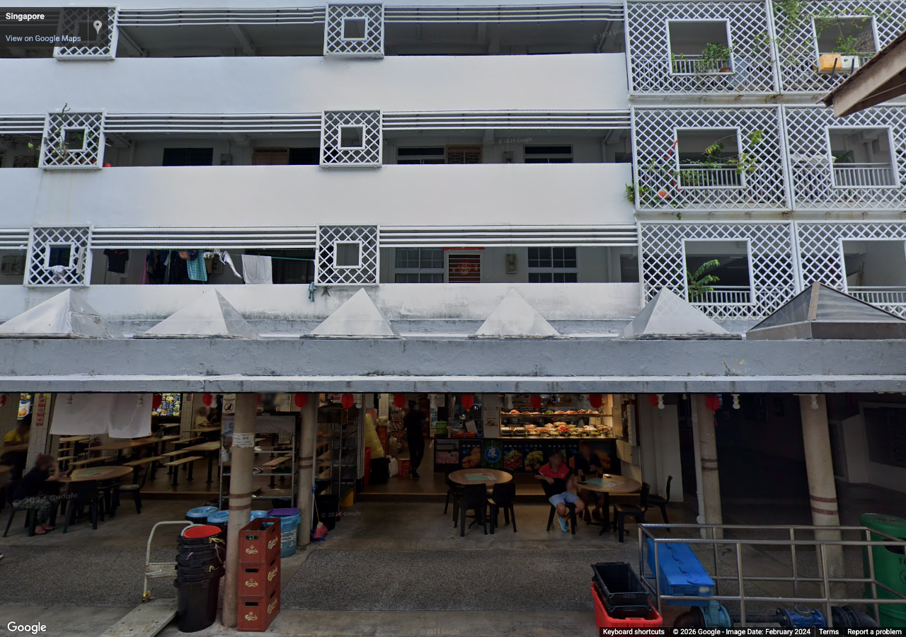
mei-ling-road-180 — Additional street exterior references for estate facades, public realm, planting and sheltered links
Source 2024-02, heading 180°, pitch 8°, zoom 1. Metadata / review
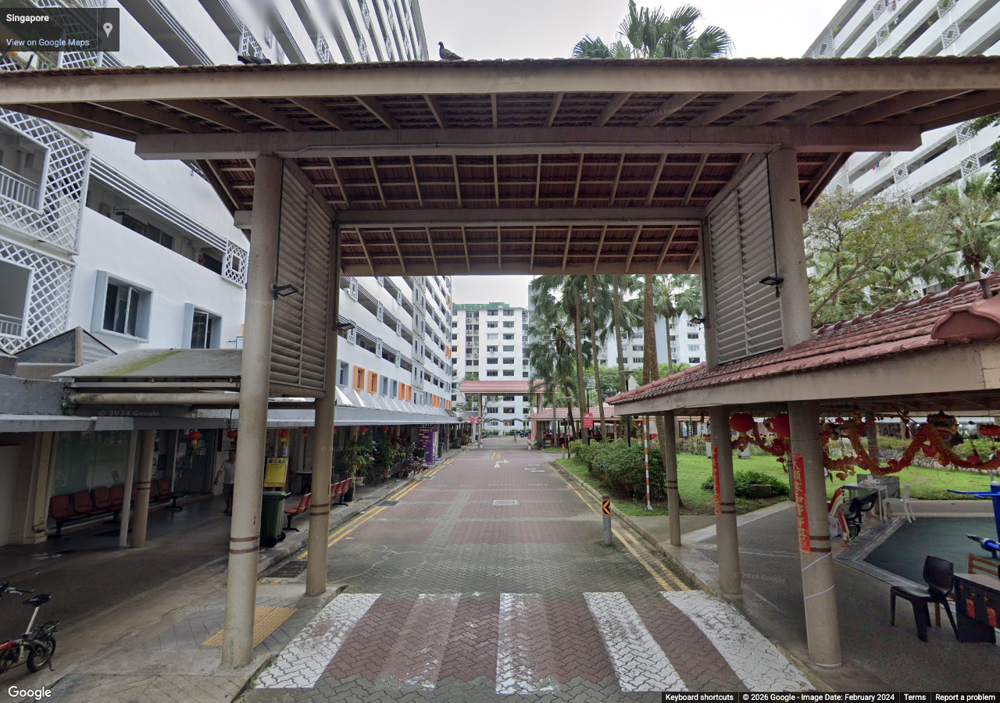
mei-ling-road-270 — Additional street exterior references for estate facades, public realm, planting and sheltered links
Source 2024-02, heading 270°, pitch 8°, zoom 1. Metadata / review
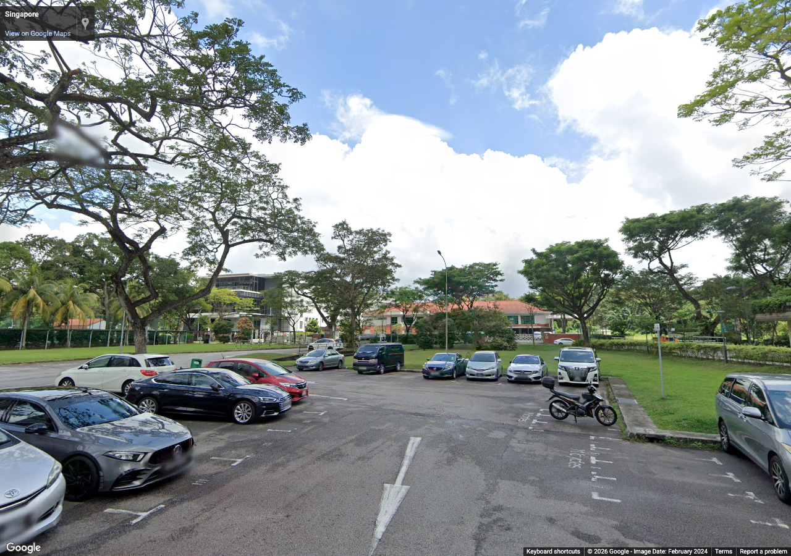
dawson-0 — Additional street exterior references for estate facades, public realm, planting and sheltered links
Source 2024-02, heading 0°, pitch 8°, zoom 1. Metadata / review
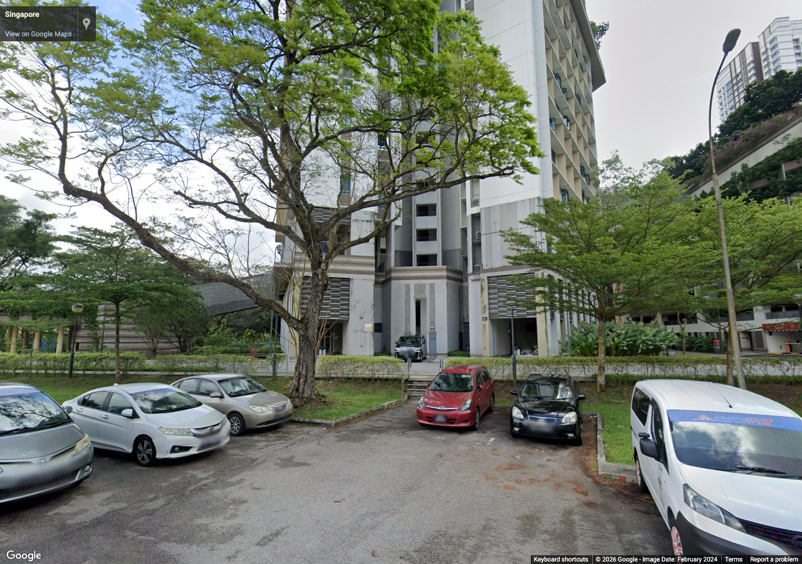
dawson-90 — Additional street exterior references for estate facades, public realm, planting and sheltered links
Source 2024-02, heading 90°, pitch 8°, zoom 1. Metadata / review
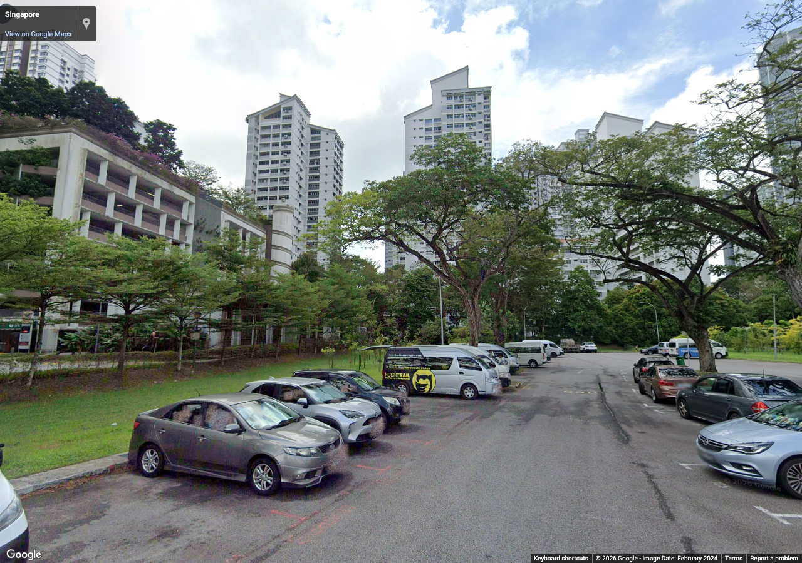
dawson-180 — Additional street exterior references for estate facades, public realm, planting and sheltered links
Source 2024-02, heading 180°, pitch 8°, zoom 1. Metadata / review
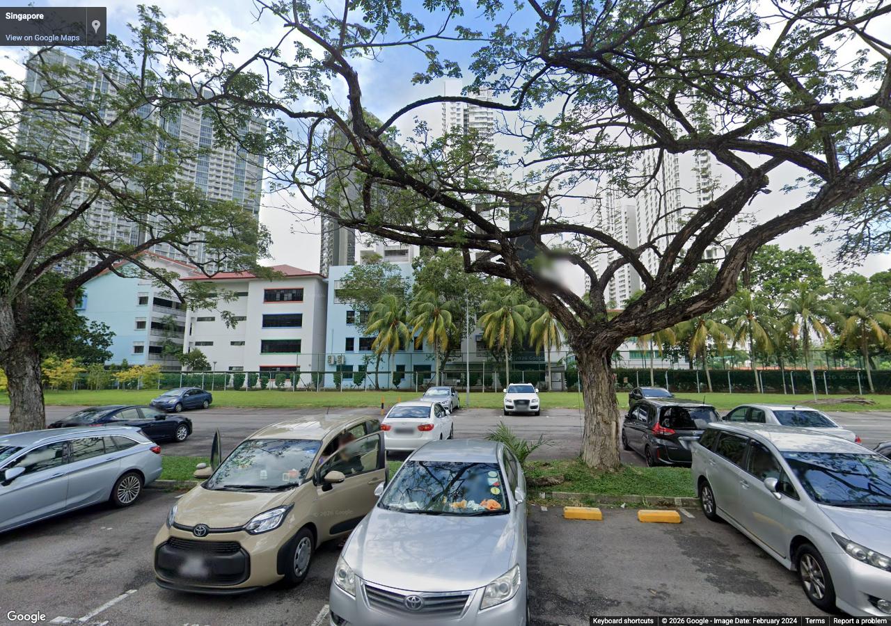
dawson-270 — Additional street exterior references for estate facades, public realm, planting and sheltered links
Source 2024-02, heading 270°, pitch 8°, zoom 1. Metadata / review
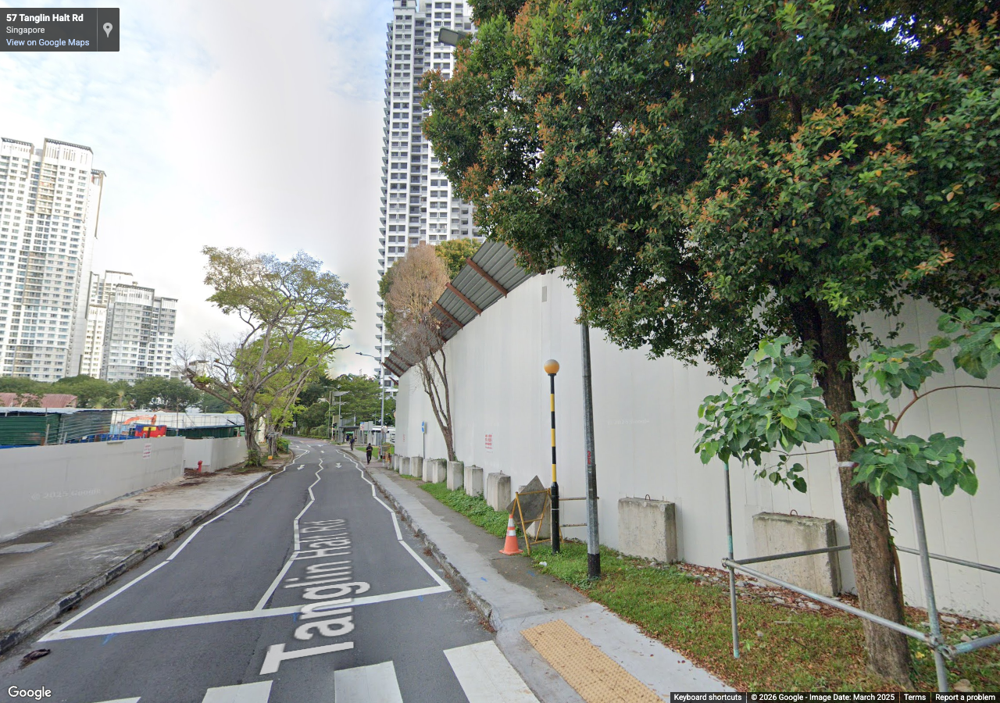
tanglin-halt-0 — Additional street exterior references for estate facades, public realm, planting and sheltered links
Source 2025-03, heading 0°, pitch 8°, zoom 1. Metadata / review
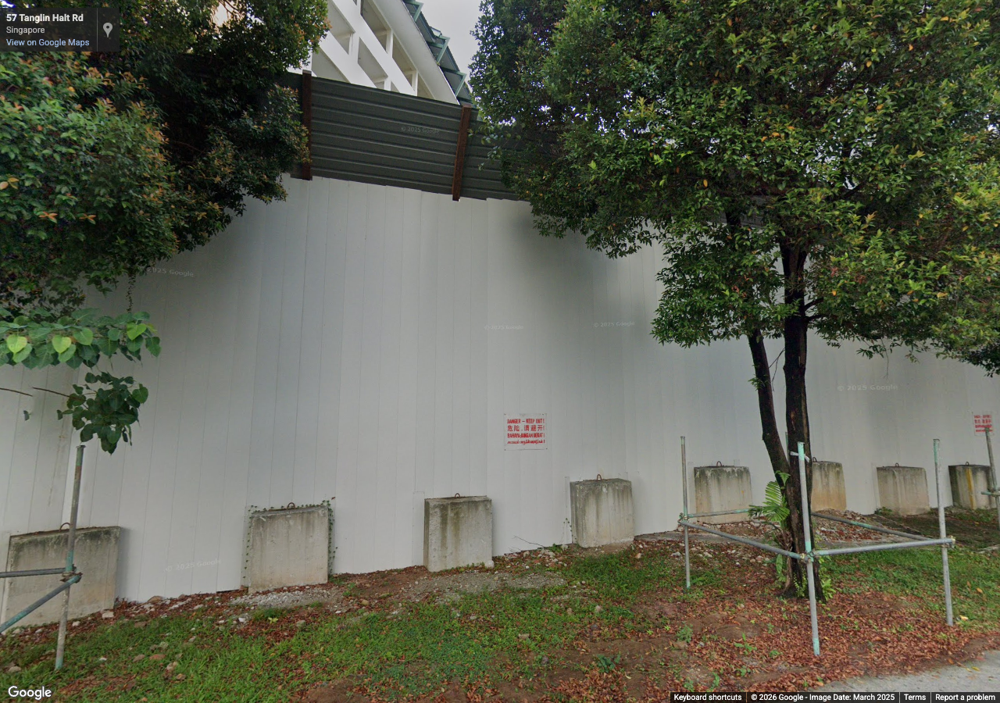
tanglin-halt-90 — Additional street exterior references for estate facades, public realm, planting and sheltered links
Source 2025-03, heading 90°, pitch 8°, zoom 1. Metadata / review
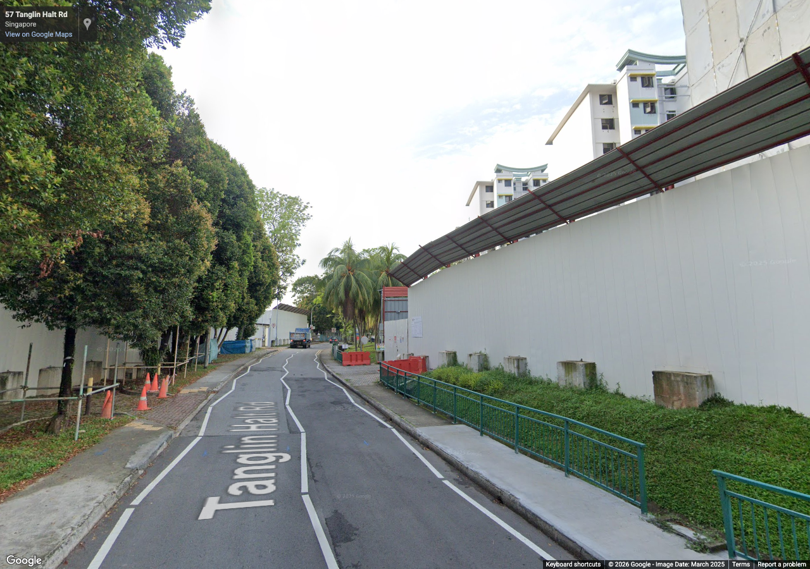
tanglin-halt-180 — Additional street exterior references for estate facades, public realm, planting and sheltered links
Source 2025-03, heading 180°, pitch 8°, zoom 1. Metadata / review
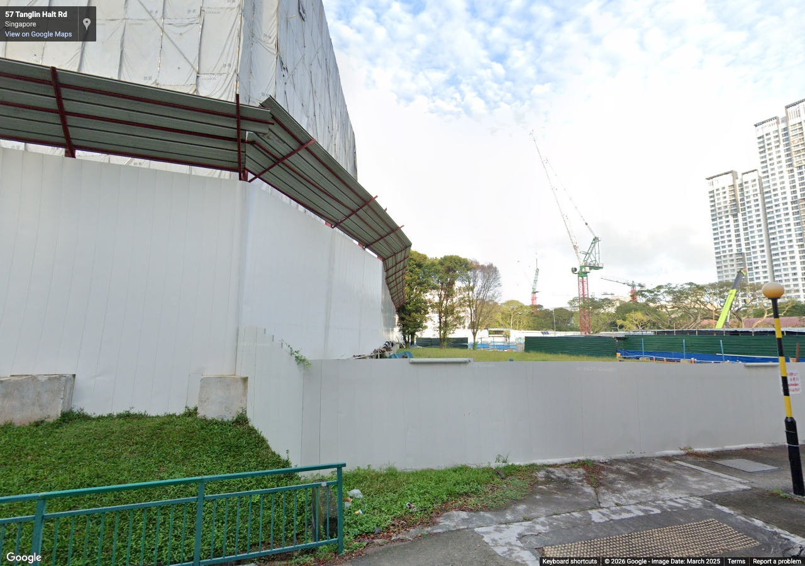
tanglin-halt-270 — Additional street exterior references for estate facades, public realm, planting and sheltered links
Source 2025-03, heading 270°, pitch 8°, zoom 1. Metadata / review